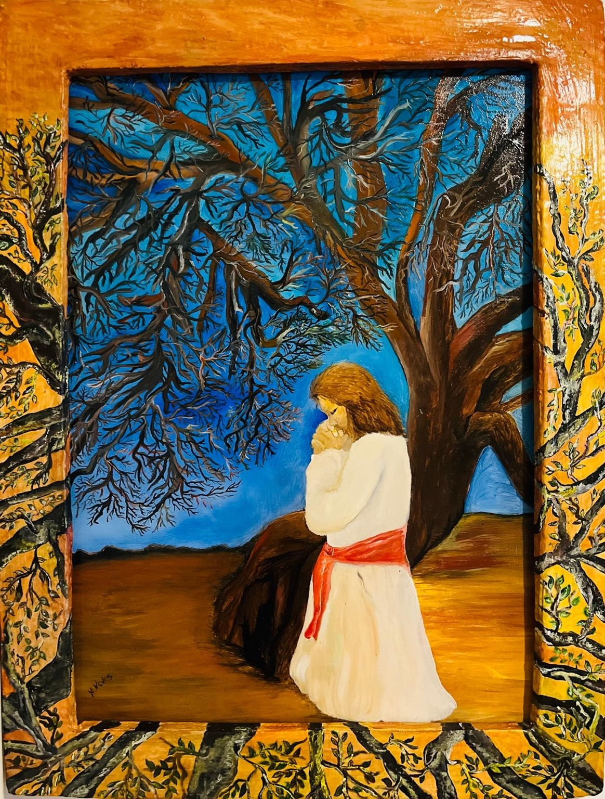

L'Albero della Gratitudine
Un invito a riconoscere le piccole e grandi ragioni per essere grati.
Ogni opera è una porta verso la memoria, la gratitudine e le infinite possibilità della vita.
Esplora le opereMargarete Neves è una pittrice autodidatta e scrittrice brasiliana che vive in Italia. Attraverso la pittura e la scrittura esplora la memoria, la resilienza, la speranza e la gratitudine. Le sue opere invitano ciascuno a ritrovare la propria storia, oltre la superficie del dipinto.
Tre porte d'ingresso al mio universo creativo. Le fotografie originali saranno inserite nella prossima versione.

Un invito a riconoscere le piccole e grandi ragioni per essere grati.
Il passaggio tra ciò che siamo stati e ciò che possiamo diventare.
Una finestra aperta su possibilità che ognuno immagina a modo proprio.
Un percorso narrativo tra ricordi, emozioni e trasformazione.
Un progetto di scrittura e testimonianze ispirato alla forza della gratitudine. In preparazione.
Un'opera che diventa incontro: ogni foglia può custodire un pensiero, un ricordo o una parola di gratitudine. Il progetto ha incontrato anche scuole e comunità in Brasile.
Per informazioni sulle opere, progetti artistici, mostre e collaborazioni, scrivimi attraverso il mio profilo Instagram. Aggiungeremo qui l'indirizzo email professionale e i collegamenti ufficiali quando saranno confermati.
Nessun modulo raccoglie dati personali su questo sito dimostrativo.